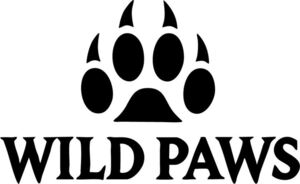

Trade Mark Journal No.2026/012 20 March 2026
WO0000001905988 (3,5,18,20,21,31)
Office of origin: Switzerland
Date of International Registration:24 September 2025
Date of designation in the UK:
24 September 2025

International priority date claimed: 6 June 2025
(Switzerland)
(836629)
- Class 3
- Cosmetics and deodorants for animals; care products (for non-medical use) for domestic animals, such as shampoos, skin care sprays, skin balms, paw balm, essential oils for the grooming of animals, cleaning products for households with pets, soaps specially adapted for domestic animals, toothpastes for dogs and cats, scented sprays for domestic animals and their environment; stain removers; deodorizing products for cleaning litter trays; breath freshening sprays and scented water for animals; deodorants for pets and livestock.
- Class 5
- Medical and veterinary products; nutritional supplements; animal feed supplements for medical purposes; vitamin preparations; veterinary products (probiotics) for dogs and cats; plant-based tranquillizers; joint, digestive and immune health products; treats and medicinal powders for domestic animals; anti-parasitic and anti-tick products; care products for healing and regeneration; disinfectants for veterinary use for pets and livestock.
- Class 18
- Bags; covers (clothing) for animals; clothing for pets; harness for animals; carrying bags with interior padding for dogs and cats; leather or vegan leather cross bag dispenser cover; travel cases for leather or vegan leather care products; robust food bags made of imitation leather for trips; cases for medical travel equipment for domestic animals; collars, leashes, muzzles and carrying bags.
- Class 20
- Furniture; containers not of metal (storage); beds for domestic animals; portable folding boxes for travel and transportation; storage cases of wood or plastic for food and grooming articles; shelves for mess-tins; storage cases, not of metal, for animal accessories.
- Class 21
- Household and kitchen items for domestic animals; mess-tins; water fountains for domestic animals; manual cleaning brushes for fur care; storage containers for sweets; portable disinfecting sprays; combs and brushes for fur care; cages for domestic animals.
- Class 31
- Animal feeds; litter for animals; pet food; pet food fortified with nutritional elements and vitamins; edible treats for household pets; food mixes without cereals; natural litter for rodents and small animals; fresh herbs for animal husbandry; organic feeding for dogs and cats; ice cream and drinks for domestic animals; litter for domestic animals.
Wild Paws AG
Representative: Troller Hitz Troller, Rechtsanwälte, Münstergasse 38, CH-3011 Bern, SWITZERLAND